Rebekah Louise Chan
Aspiring Game Dev and Music Producer
chanrebekahlouise@gmail.com
Gumroad Youtube
Some Page Translation Works:
ダイヤのＣ 第６話より
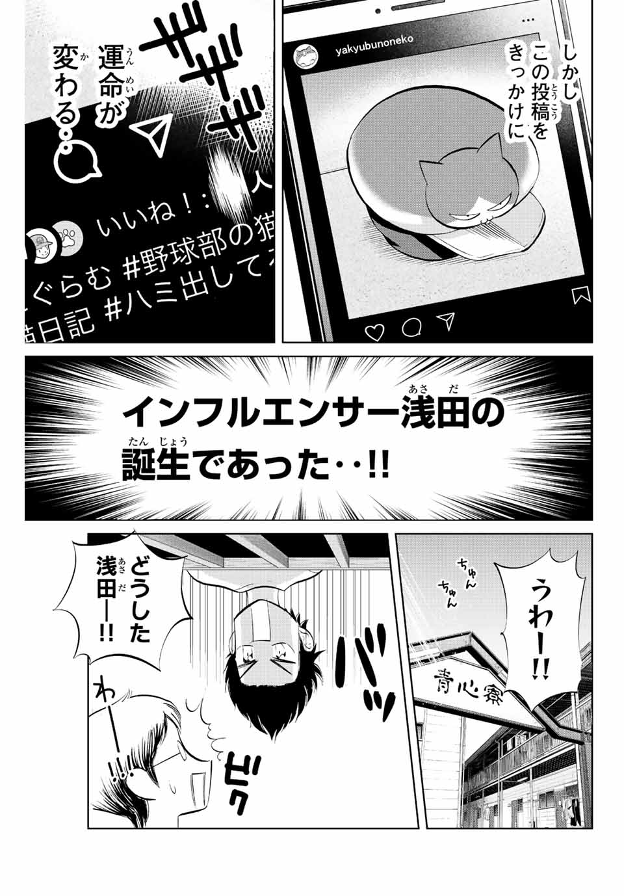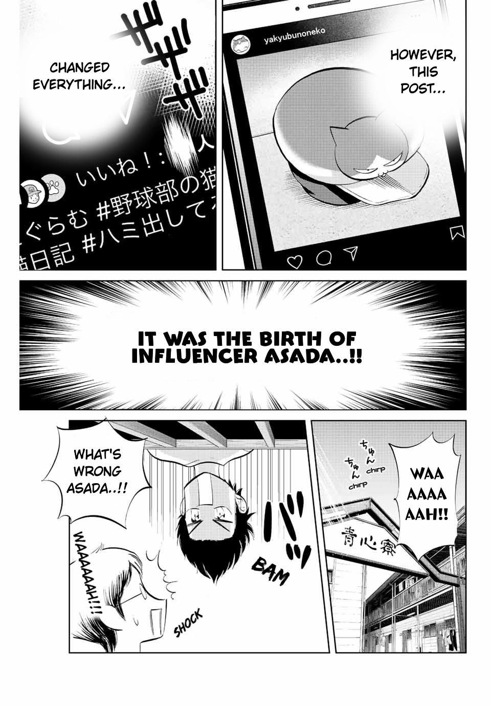～
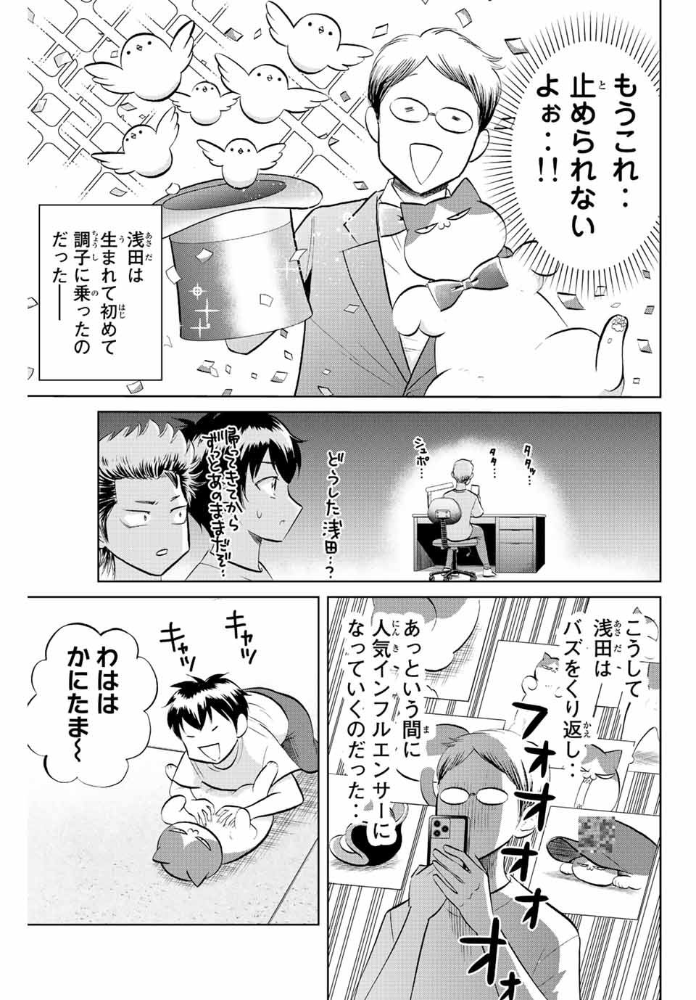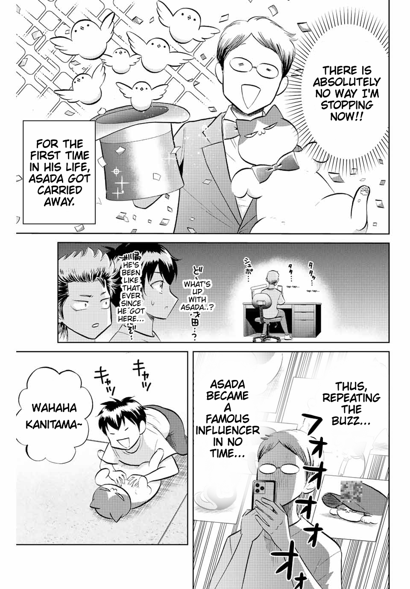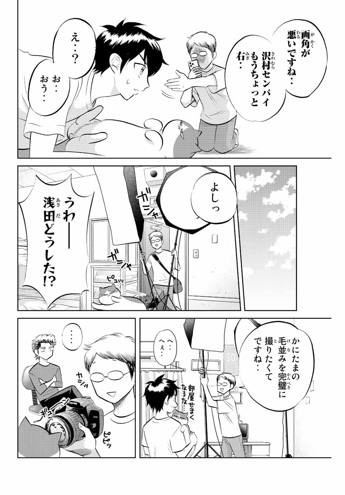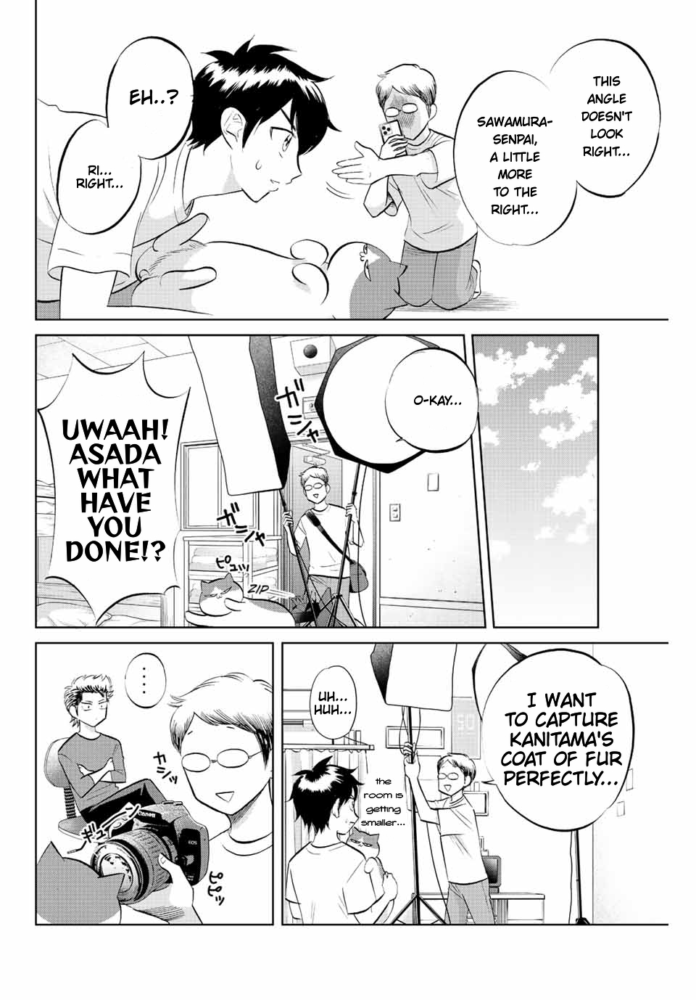
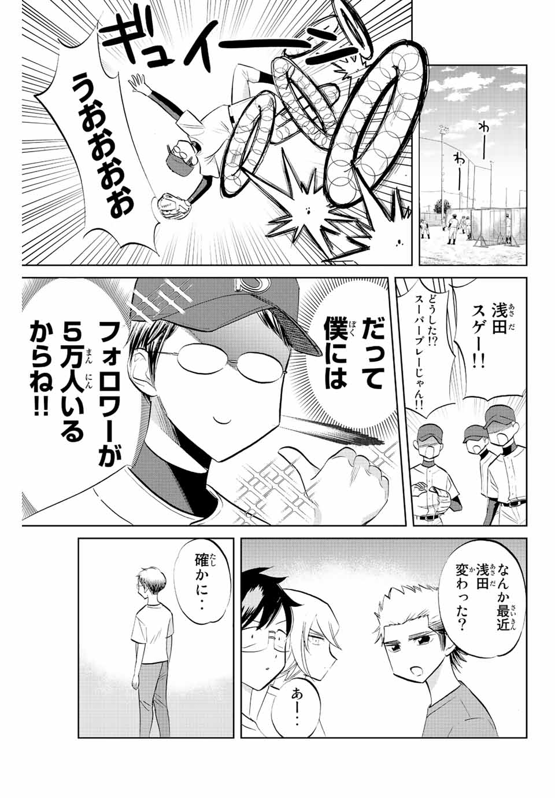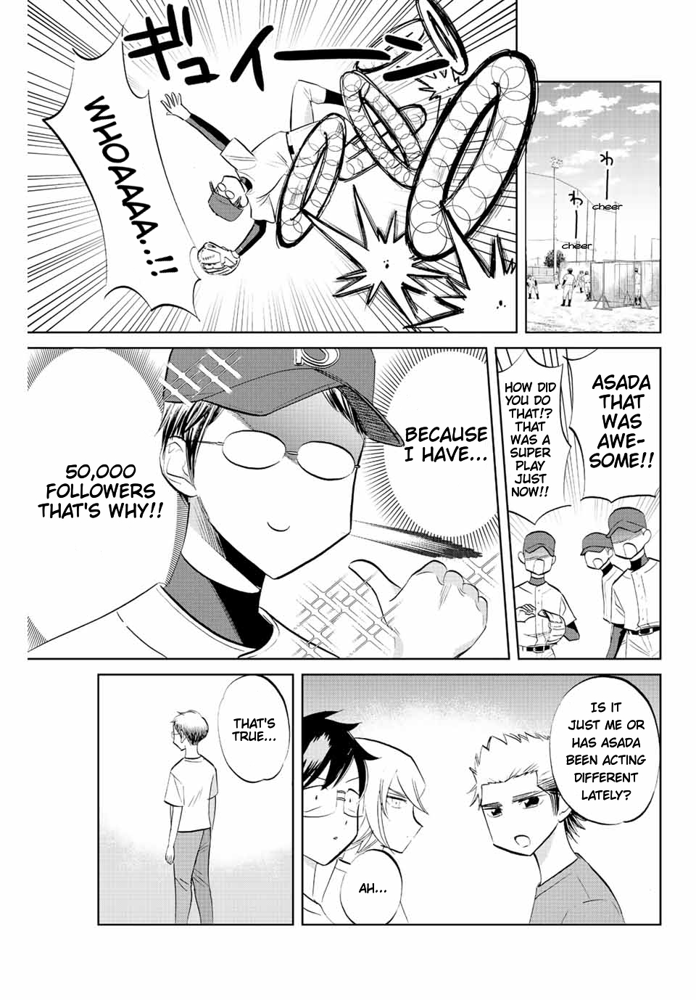
おそ松さん漫画 第３７話より
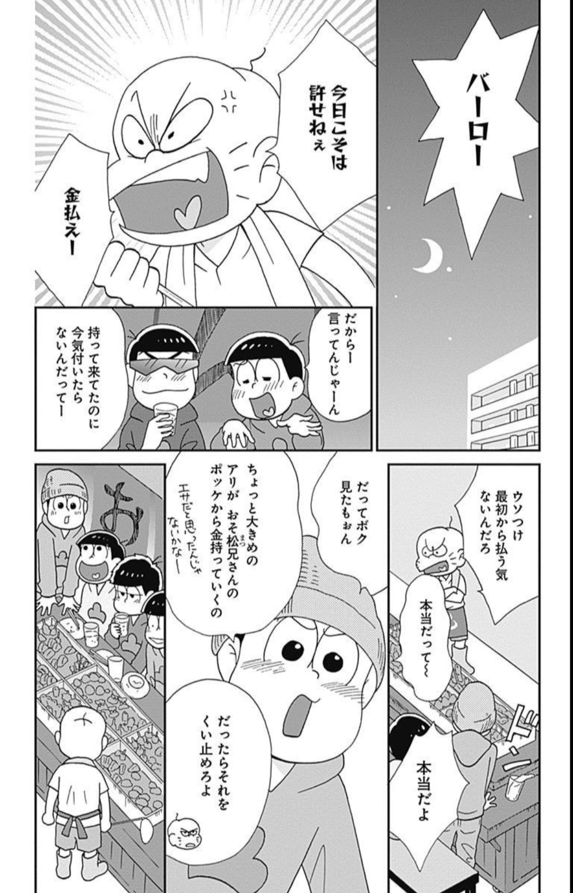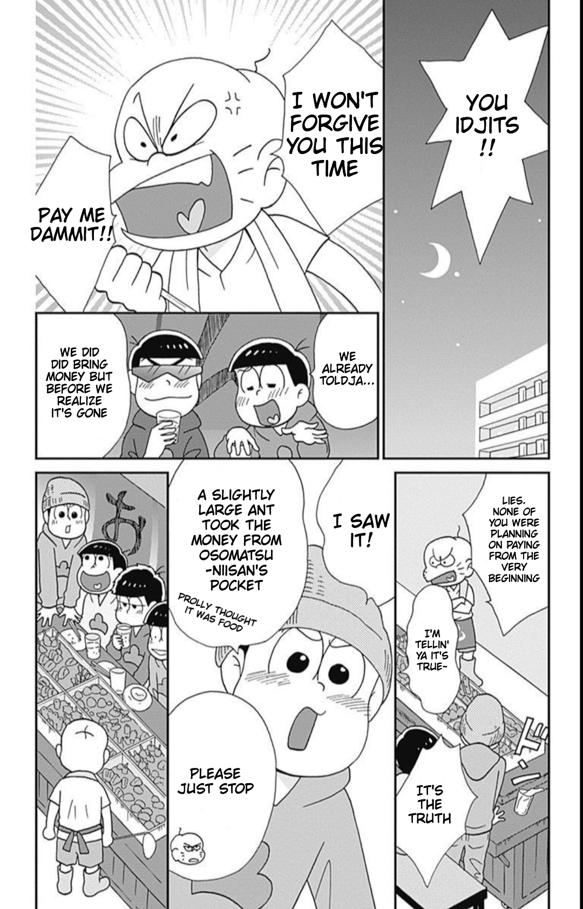～
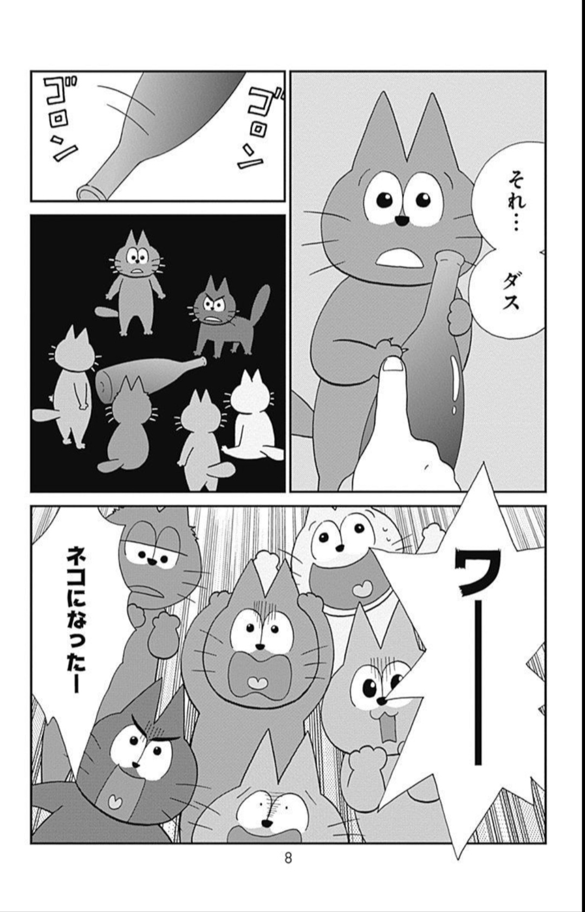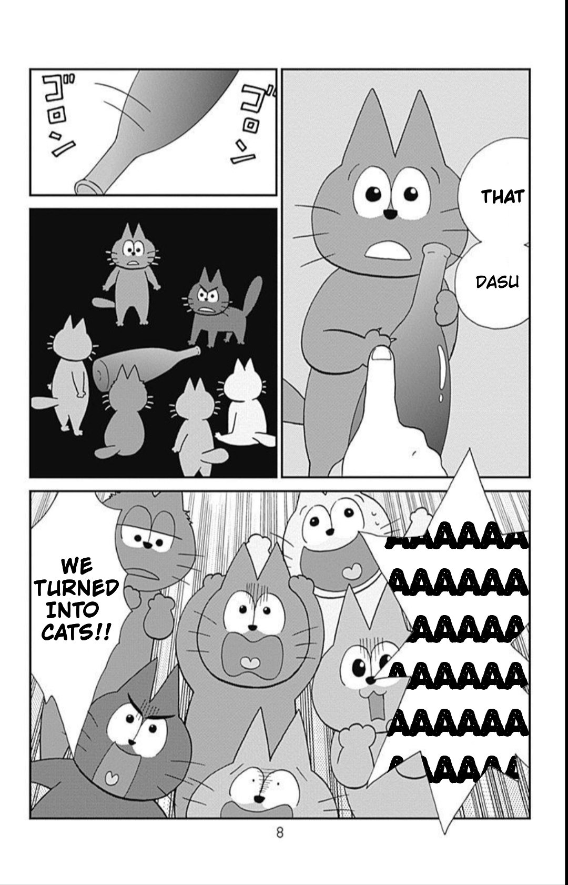Some song lyrics optimized with HTML (no CSS) for learning the language (made for tutoring):
愛のうた
コバルトの街
ドライフラワー
Good Goodbye
花になって
ひだまりの詩
光るなら
ひまわりの約束１１５万キロのフィルム
糸
奏
風のゆくえ
ここで息をして
Lemon
LITMUS
名前を呼ぶよ
猫
One More Time, One More Chance
オレンジ
Pretender
THE GIFT
渡良瀬橋